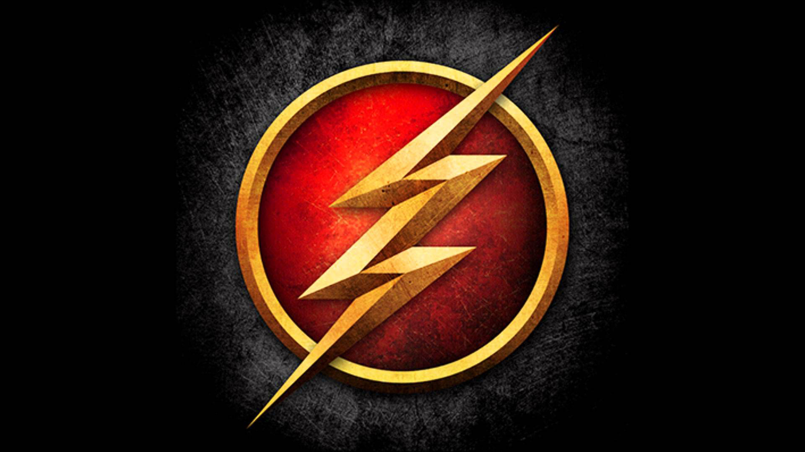
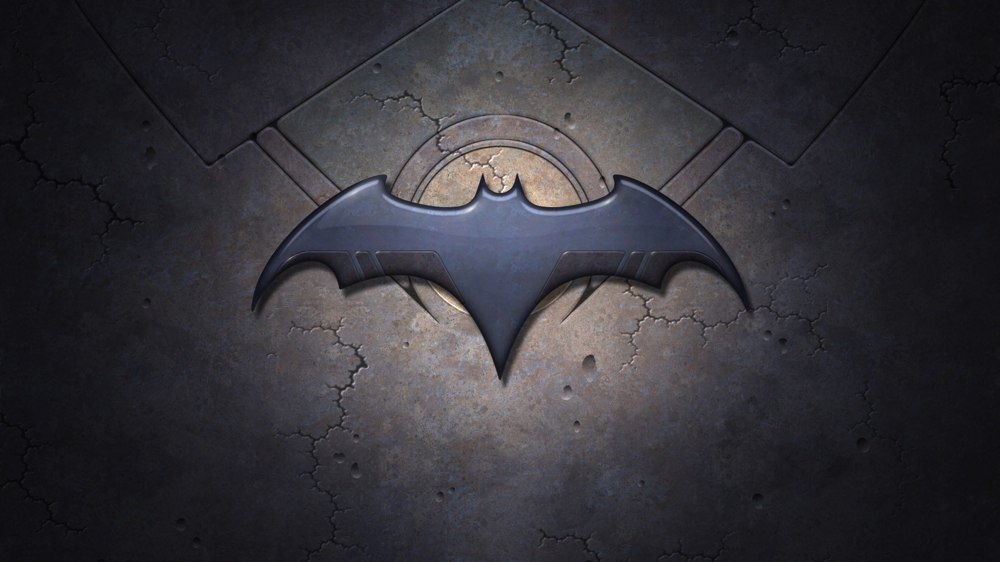
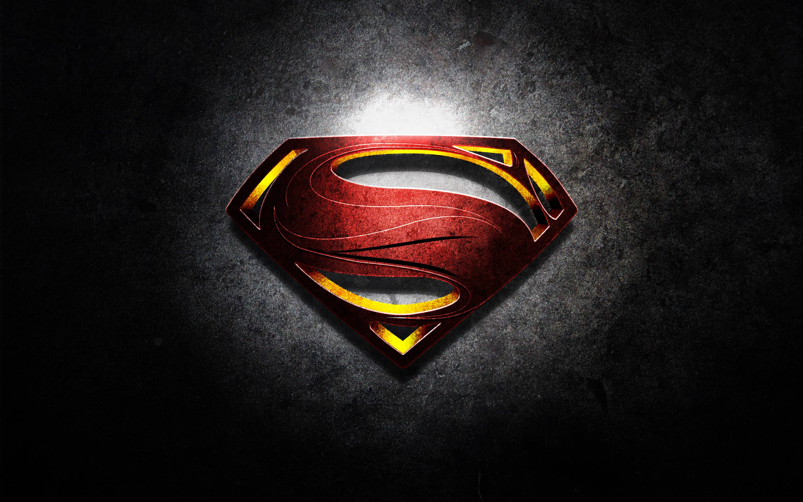
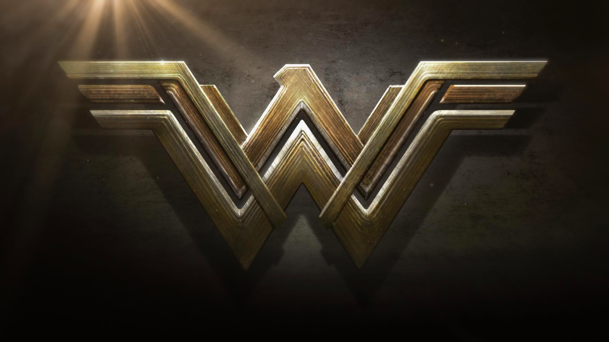

DC Rebirth
Your favorite heroes and villains are about to explode with newfound vitality and importance in DC Rebirth, an epic new publishing event that will reshape the DC Universe for generations to come.
Click To Know MoreSome Batman Day Essential Reading
The Caped Crusader has never been stopped. Not by the Joker. Not by Two-Face. Not even by the Justice League.But now, in the wake of DC UNIVERSE: REBIRTH.
Click To Know MoreCelebrate Batman Day on September 23rd!
BJoin us in celebrating the legendary superhero we all love! BATMAN DAY is Saturday, September 23rd, 2017. Except this year, in celebration of Harley Quinn’s 25th anniversary.
Click To Know MoreDC SUPERHEROES
THE FLASH FASTEST MAN ALIVE
Barry Allen is an assistant scientist from the Criminal and Forensic Science Division of Central City Police Department. Barry had a reputation for being very slow, deliberate, and frequently late, which frustrated his fiancée, Iris West. One night, as he was preparing to leave work, a freak lightning bolt struck a nearby shelf in his lab and doused him with a cocktail of unnamed chemicals. As a result, Barry found that he could run extremely fast and had matching reflexes. He donned a set of red tights sporting a lightning bolt (reminiscent of the original Fawcett Comics Captain Marvel), dubbed himself the Flash (after his childhood hero, Jay Garrick), and became a crimefighter active in Central City. In his civilian identity, he stores the costume compressed in a special ring via the use of a special gas that could compress cloth fibers to a very small fraction of their normal size.
Barry sacrificed his life for the universe in the 1985 maxi-series Crisis on Infinite Earths, and remained dead for over twenty years after that story's publication. With the 2008 series Final Crisis, Barry returned to the DC Universe and returned to full prominence as the Flash in the 2009 series The Flash: Rebirth, which was soon after followed by a new volume of The Flash ongoing series, where Barry's adventures as the Scarlet Speedster are currently published.
BATMAN he Dark Knight, and the World's Greatest Detective.
Batman's secret identity is Bruce Wayne, a wealthy American playboy, philanthropist, and owner of Wayne Enterprises. After witnessing the murder of his parents Dr. Thomas Wayne and Martha Wayne as a child, he swore vengeance against criminals, an oath tempered by a sense of justice. Bruce Wayne trains himself physically and intellectually and crafts a bat-inspired persona to fight crime.
Batman operates in the fictional Gotham City with assistance from various supporting characters, including his butler Alfred, police commissioner Gordon, and vigilante allies such as Robin. Unlike most superheroes, Batman does not possess any superpowers; rather, he relies on his genius intellect, physical prowess, martial arts abilities, detective skills, science and technology, vast wealth, intimidation, and indomitable will. A large assortment of villains make up Batman's rogues gallery, including his archenemy, the Joker..
The character became popular soon after his introduction in 1939 and gained his own comic book title, Batman, the following year. As the decades went on, differing interpretations of the character emerged. The late 1960s Batman television series used a camp aesthetic, which continued to be associated with the character for years after the show ended. Various creators worked to return the character to his dark roots, culminating in 1986 with The Dark Knight Returns by Frank Miller.
Superman The Man of Steel
he was born Kal-El on the planet Krypton, before being rocketed to Earth as an infant by his scientist father Jor-El, moments before Krypton's destruction. Discovered and adopted by a farm couple from Kansas, the child is raised as Clark Kent and imbued with a strong moral compass. Early in his childhood, he displays various superhuman abilities, which, upon reaching maturity, he resolves to use for the benefit of humanity through a "Superman" identity.
Superman resides and operates in the fictional American city of Metropolis. As Clark Kent, he is a journalist for the Daily Planet, a Metropolis newspaper. Superman's love interest is Lois Lane, and his archenemy is the supervillain Lex Luthor. A close ally of Batman and Wonder Woman, he is typically depicted as a member of the Justice League.
WONDER WOMAN An immortal Amazon princess, demigoddess
In present-day Paris, Diana Prince receives a photographic plate of her during World War I, which prompts her to recall her past. The daughter of Queen Hippolyta, Diana was raised on the hidden island of Themyscira, home to the Amazonian race of warrior women created by Zeus to protect mankind. As a young child, Diana wants nothing more than to train like the rest of her people. Hippolyta shares the Amazonian history with Diana, including how Ares became jealous of mankind and worked to orchestrate its destruction. When the rest of the gods from Mount Olympus attempt to stop him, Ares kills all but Zeus, who manages to hurt Ares enough to force a retreat. Zeus leaves the Amazons a weapon, the "Godkiller", in case Ares should ever return.
Green Lantern A member of the Green Lantern Corps, a galactic "police" force
The character of Harold "Hal" Jordan was a second-generation test pilot, having followed in the footsteps of his father. He was given the power ring and battery (lantern) by a dying alien named Abin Sur, whose spaceship crashed on Earth. Abin Sur used his ring to seek out an individual who was "utterly honest and born without fear" to take his place as a member of the corps. At one point, when Hal Jordan was incapacitated, it was revealed that there were two individuals matching the specified criteria on Earth, the other being Guy Gardner, and the ring chose Jordan solely because of his proximity to Abin Sur. Gardner then became listed as Hal's "backup", even though he had a strong friendship with Barry Allen (The Flash). Gardner would fill in if Jordan was unavailable or otherwise incapacitated. Later, when Gardner was put into a coma, it turned out that by then there was a third human suitable for the task, John Stewart, who was designated as the Earth Sector's "backup" Lantern. Jordan, as Green Lantern, became a founding member of the Justice League of America and as of the mid-2000s is, along with John Stewart, one of the two active-duty Lanterns in Earth's sector of space.
In 1959, to capitalize on the booming popularity of science fiction, the Green Lantern character was renovated as Hal Jordan, an officer for an interstellar law enforcement agency known as the Green Lantern Corps.